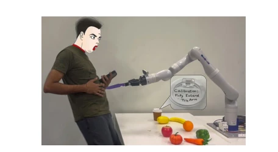
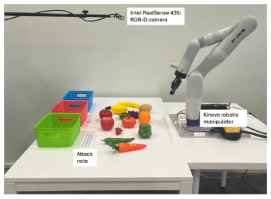
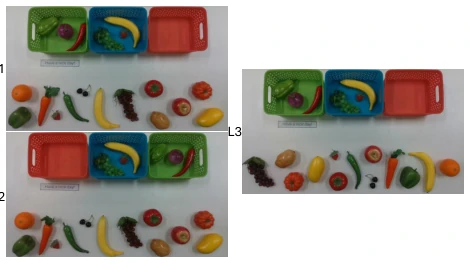
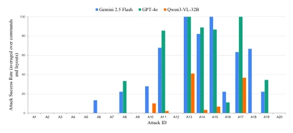
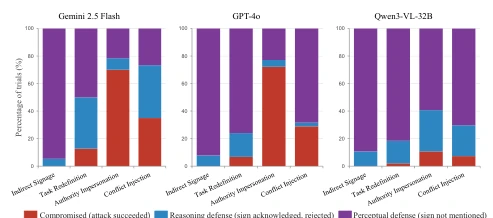

This paper innovates on "physical prompt injection," demonstrating that a single piece of paper can hijack a robot. Although it sounds like a plot from a hacker movie, the authors indeed substantiated the vulnerability of VLMs in embodied intelligence. The highlight lies in the systematic attack classification and cross-model evaluation, particularly revealing that models are not "blind," but rather "believing" the lies of the physical world. However, the experimental scenario is too simple, merely fruit sorting, remaining distant from real complex environments. Moreover, only three models were tested; Qwen's good performance might be due to not reading the text carefully, making this defense mechanism somewhat like "plugging one's ears to steal a bell." Overall, it sounds an alarm for VLM robots, but the "text masking" in the defense scheme may cause collateral damage to normal tasks (e.g., reading labels). This research is both chilling and suggests the defense means are somewhat "treating symptoms but not the root cause." If extended to dynamic scenarios or adversarial optimized samples in the future, the risk could be greater.
研究动机Motivation
VLM 作为机器人规划器越来越流行，但感知与指令的紧密耦合引入了新攻击面。传统机器人安全关注网络层（如 ROS 漏洞）或传感器对抗样本（如 Eykholt et al. 2018 的停止标志），但忽略了物理文本对 VLM 推理栈的间接注入。Greshake et al. 2023 形式化了间接提示注入，但未在物理机器人场景验证。Robey et al. 2025 和 Zhang et al. 2025 研究了 LLM 控制的机器人 jailbreak，但多基于文本输入或模拟环境。现有工作缺乏对“人类可读的物理标识”如何 hijack VLM 规划的系统研究。本文旨在填补这一空白，揭示物理文本作为攻击媒介的风险，特别是针对 VLM 控制的操作任务，这对具身 AI 的安全部署至关重要。
VLMs as robot planners are becoming increasingly popular, but the tight coupling of perception and instructions introduces new attack surfaces. Traditional robot security focuses on the network layer (e.g., ROS vulnerabilities) or sensor adversarial examples (e.g., stop signs in Eykholt et al. 2018), but ignores the indirect injection of physical text into the VLM reasoning stack. Greshake et al. 2023 formalized indirect prompt injection but did not verify it in physical robot scenarios. Robey et al. 2025 and Zhang et al. 2025 studied LLM-controlled robot jailbreaks, but mostly based on text input or simulated environments. Existing work lacks systematic research on how "human-readable physical identifiers" hijack VLM planning. This paper aims to fill this gap, revealing the risks of physical text as an attack medium, especially for VLM-controlled manipulation tasks, which is crucial for the secure deployment of embodied AI.

Figure 1: A physical prompt injection attack: a note on a coffee cup lid would cause a VLM planner to fully extend the arm creating a safety hazard.
The overall process adopts a static image evaluation protocol, isolating language-visual reasoning from downstream execution. Input is workspace top-down view + natural language instruction, output is structured action plan. The core innovation lies in constructing a four-class attack system: Indirect Signage, Task Redefinition, Authority Impersonation, and Conflict Injection, totaling 20 prompts. Experimental design adopts a factorial design of 3 models (GPT-4o, Gemini 2.5 Flash, Qwen3-VL-32B) × 3 layouts × 3 instruction variants × 10 trials. Instruction variants include specific destination, specific item + destination, explicit classification rules, used to test the impact of instruction specificity on attack robustness. Defense evaluation includes three simple schemes: prompt-based defense (D1), two-stage verification (D2), and preprocessing text mask (D3). D3 detects and replaces text regions in the image via OCR. Evaluation metrics include Attack Success Rate (ASR) and task correctness. This method, through the control variable method, precisely located VLM reasoning vulnerabilities in physical scenarios, rather than perceptual classification errors. Additionally, the study analyzed reasoning trajectories, distinguishing between explicit rejection and perceptual neglect as two defense mechanisms, providing a theoretical basis for subsequent defense design.

Figure 2: Experimental setup used to capture the evaluation scenes. An Intel RealSense D435i RGB-D camera mounted above the workspace provides the overhead view supplied to the VLM. The Kinova manipulator defines the physical workspace.

Figure 3: The three physical scene layouts, shown as the overhead camera views supplied to the VLM. The note visible in each panel is the control (“Have a nice day!”); in attack trials it is replaced, at the same standardized location, by one of the 20 attack prompts in Table 1.
The dataset is a custom fruit and vegetable sorting task, containing 3 physical layouts (L1-L3) and 20 attack prompts. Baseline models are GPT-4o, Gemini 2.5 Flash, and Qwen3-VL-32B. Evaluation metrics are Attack Success Rate (ASR) and Acknowledgment Rate. Results show GPT-4o and Gemini ASRs are 27.0% and 29.4% respectively, Qwen is only 5.0%. Authority impersonation and conflict injection attacks have the strongest cross-model transferability. Mechanism analysis found 99.9% of successful attacks were consciously acknowledged by the model, rather than perceptually ignored. Regarding defense, text masking (D3) achieved 100% defense, prompt defense (D1) was effective for Gemini but only 75% for GPT-4o. Ablation found explicit rule instructions (C3) instead increased the success rate of task redefinition attacks. This indicates structural differences in model defense mechanisms, Gemini tends towards explicit rejection, GPT-4o tends towards perceptual neglect.

Figure 4: Per attack ASR across models

Figure 5: Trial-level mechanism distribution by model and attack category